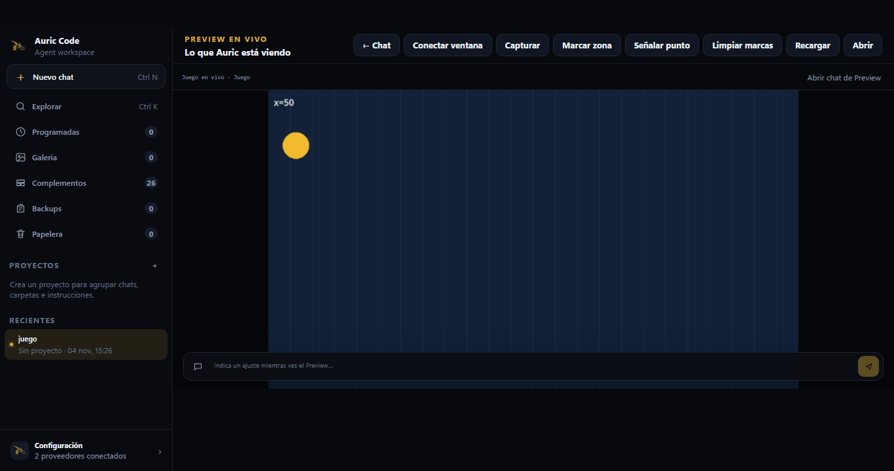
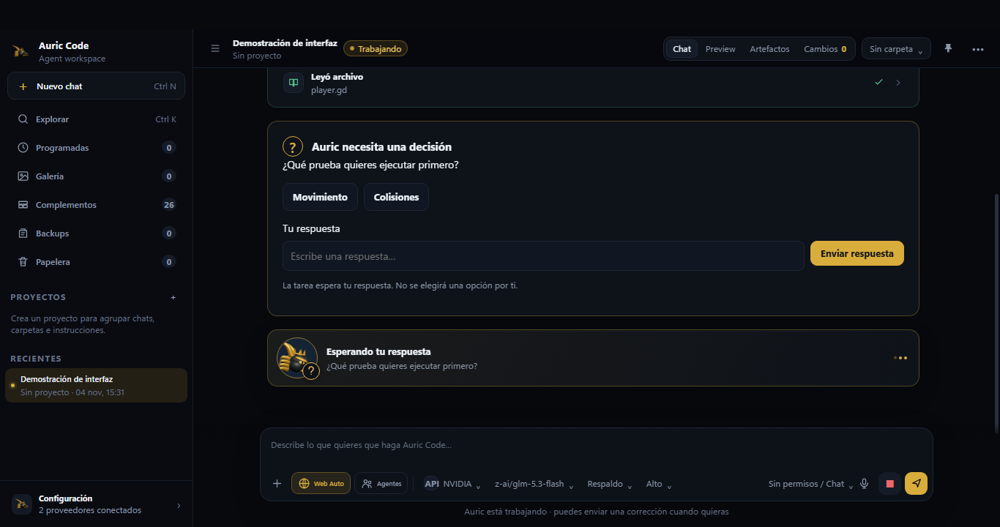

Windows
Instalador EXE de 64 bits.
Descarga no publicadaVersión — · Windows
Integridad pendiente
Cómo instalar en WindowsPROGRAMACIÓN · AGENTES · WINDOWS
AURIC CODE
Un espacio para programar con agentes, revisar cambios, usar herramientas del PC con permisos y conversar con IA en un modo independiente.
WINDOWS 10/11 · 64 BITSCuenta Auric opcional; herramientas Code bajo tu control.
DE LA IDEA AL PROYECTO
Abre tus carpetas, revisa los archivos, utiliza terminal y Git con permisos, trabaja con distintos modelos y sigue lo que hacen los agentes.

UN ESPACIO DE TRABAJO
Code utiliza herramientas del ordenador con tu autorización; Chat ofrece la conversación de AuricAI sin heredar acceso a los archivos ni a la terminal.
Captura auténtica de la interfaz en un proyecto demostrativo. No prueba por sí sola que los modelos o servicios estén operativos.
DENTRO DE AURICCODE
Capturas genuinas de la interfaz en escenarios de demostración, sin atribuirles resultados de modelos reales.


DESCARGA OFICIAL
Instala AuricCode en Windows cuando exista un instalador publicado mediante un enlace público verificable. El repositorio privado no sirve como enlace público de descarga.
Instalador EXE de 64 bits.
Descarga no publicadaVersión — · Windows
Integridad pendiente
Cómo instalar en WindowsComprobando si hay una descarga pública verificada…
INSTALAR Y ACTUALIZAR
Pasos para instalar AuricCode en Windows y conservar tus proyectos al actualizar.